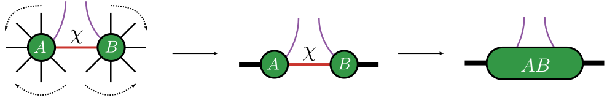
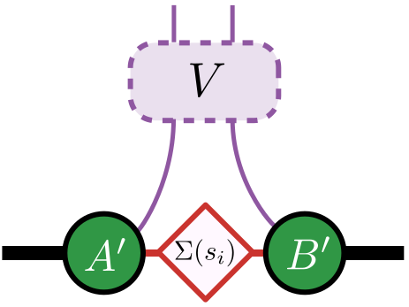
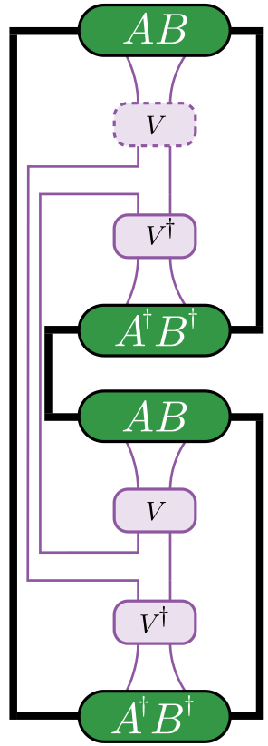

Riemannian Disentanglers
We present Riemannian manifold based disentangling algorithms. The disentangling algorithms integrate differential geometry features from packages Manifolds.jl, Manopt.jl, gradients from DifferentiationInterface.jl and tensor operations from ITensors.jl, ITensorMPS.jl.
The key idea is to disentangle the representation of a tensor network employing manifold based optimization techniques.

Figure: The indices on which the isometry acts are marked in purple. The package requires mentioning the indices on which the isometry acts with the left neighbors and right neighbors passed as an array. The package internally translates the left and right neighbors into a single combined index. Then we find the isometry that minimizes the objective function which we define below.
Manifold based optimization
Riemannian manifold optimization techniques generally involve the following:
1: Choose a manifold, $\mathcal{M}$ (here Unitary/Stiefel/Grassmannian)
2: Define an objective function, $f_\text{opt}(V)$, parameterized by $V \in \mathcal{M}$ that returns a real number
3: If gradients are required, define the gradient of the objective function $\nabla f_\text{opt}(V)$ (numerical derivative computed using an engine from DifferentiationInterface.jl, we default to Zygote.jl
4: Initialize a random point (here isometry), $V_\text{init} \in \mathcal{M}$
5: Select a solver from Manopt.jl with $f_\text{opt}(V)$, $\nabla f_\text{opt}(V)$ and $V_\text{init}$ (random initialization on the manifold) as the parameters
6: The solver returns a point (here isometry) that optimizes the objective function
Different objective functions
We now describe the different objective functions defined in the package. For example implementations, see: Disentangling the MPS, Compressing the MPO, Optimizing the LPDO.
Entropy based objective functions
α-Rényi entropy calculation
We find $V \in \mathcal{M}$ such that the α-Rényi entropy associated with the singular values, $s_{i}$ of the virtual index is minimized. The α-Rényi entropy is defined as $S^{\alpha}_{\text{ent}} = \frac{1}{1-\alpha}\log(\sum_{i}s_{i}^{2\alpha})$

Figure: Find isometry, $V$, such that the α-Rényi entropy associated with the singular values, $s_{i}$, $S^{\alpha}_{\text{ent}}$ is minimized.
The documentation for:
- α-Rényi entropy, see
Disentanglers.alpha_renyi_entropy - Numerical gradient of α-Rényi entropy, see
Disentanglers.grad_mat_are - Function integrating the above while returning the optimal isometry, see
Disentanglers.isometry_ro_are
Second-Rényi entropy
We find $U \in \mathcal{M}$ such that the second-Rényi entropy defined as in the following figure is minimized.
This computation of the objective function using such a contraction requires the norm to be 1. (Generally MPO like structures fail with this kind of approach).

Figure: Find isometry, $V$, such that the second-Rényi entropy, $-\log(\operatorname{Tr}(\rho^{2}))$ is minimized. $\operatorname{Tr}(\rho^{2})$ is computed using the non-trivial contraction.
The documentation for:
- Second-Rényi entropy, see
Disentanglers.second_renyi_entropy - Numerical gradient of second-Rényi entropy, see
Disentanglers.grad_mat_sre - Function integrating the above while returning the optimal isometry, see
Disentanglers.isometry_ro_sre
Distance based objective functions
Normalized Frobenius Norm
In the context of compressing MPO representation of unitaries, we can employ distance based objective functions given by the Normalized Frobenius Norm:
$\mathcal{\tilde{F}}(U_\text{ref}, W) = 1 - \frac{1}{d}\text{Re}(Tr[U_\text{ref}^{\dag}W])$
The optimization problem then reduces to finding the isometry W that reduces the above measure.
The documentation for:
- Normalized Frobenius Norm, see
Disentanglers.unitary_overlap - Numerical gradient of Normalized Frobenius Norm, see
Disentanglers.grad_mat_uo - Function integrating the above while returning the optimal isometry, see
Disentanglers.isometry_unitary_overlap
See related API function calls at Riemannian based disentanglers.